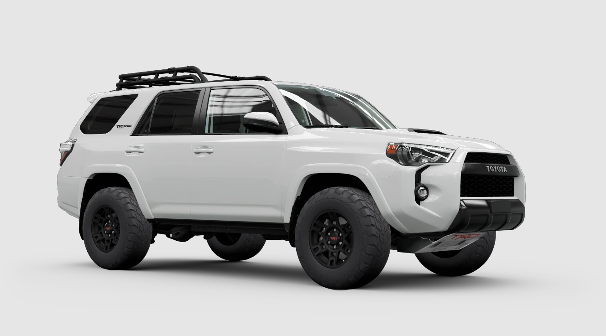

Toyota 4Runner TRD PRO
₱12,000/day
Overview: The Toyota 4Runner TRD PRO is a versatile SUV, offering rugged off-road capability and a comfortable ride. Equipped with advanced TRD technologies, it ensures reliability and performance for every adventure.
- Engine: 4.0L V6, 270 HP
- Drivetrain: 4WD with locking rear differential
- Transmission: 5-speed automatic
- Features: Crawl Control, TRD skid plate, FOX shocks
- Seating Capacity: 5 passengers
Why Rent? Perfect for off-road enthusiasts who crave adventure while enjoying premium comfort and technology.
← Back to Cars